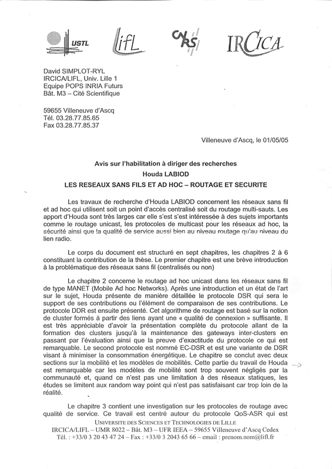
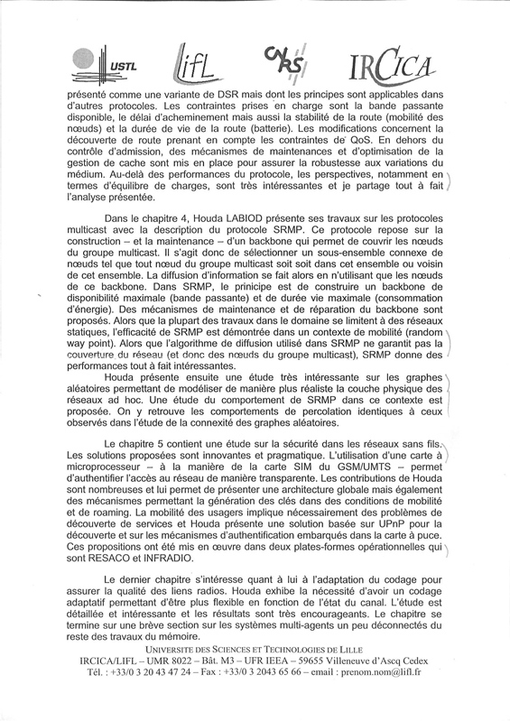
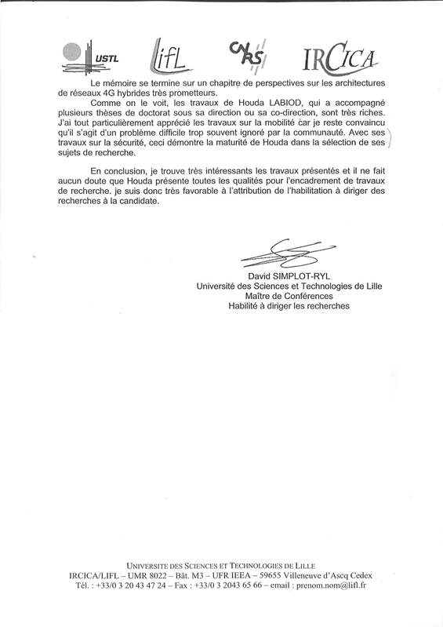
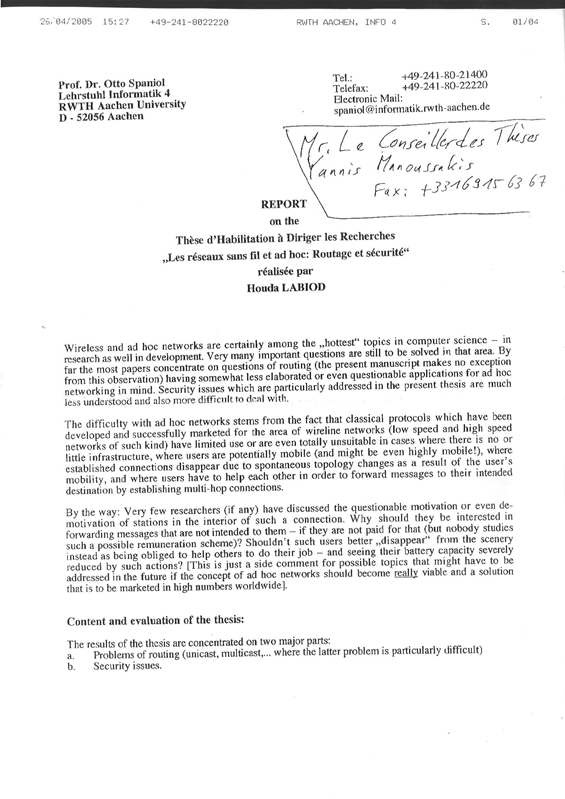
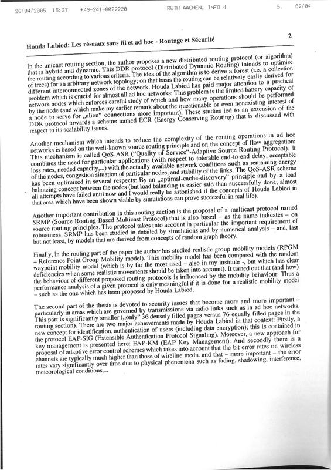
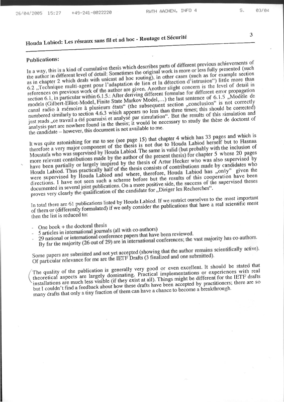
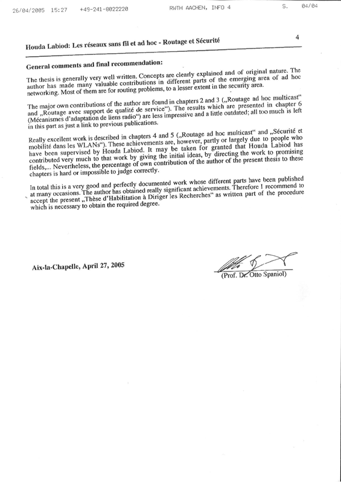
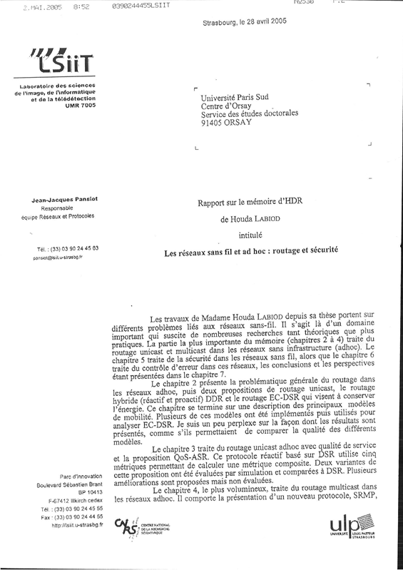

Publication
Production scientifique
Livres scientifiques
[1] A. Beylot et H. Labiod, Réseaux véhiculaires : Modèles et algorithmes, Traité réseaux et télécoms IC2, Hermès Science Publications, Septembre 2013.
[2] A. Beylot et H. Labiod, Vehicular Networks: Models and Algorithms, ISTE Publishing Knowledge/John Wiley and Sons Inc, 304 pages, Juin 2013.
[3] H. Labiod, Wireless Ad Hoc and Sensor Networks, ISTE Publishing Knowledge/John Wiley and Sons Inc, 336 pages, Janvier 2008.
[4] H. Labiod et al., New Technologies, Mobility and Security, Proceedings of NTMS’2007 Conference, Springer Verlag, 634 pages, Juin 2007.
[5] H. Labiod, H. Afifi, and C. De Santis, Wi-Fi, Bluetooth, ZigBee and WiMAX, Springer, 450 pages, Mars 2007.
[6] H. Labiod, Réseaux mobiles ad hoc et réseaux de capteurs sans fil, Hermès Science Publications/Lavoisier, (Collection : Traité IC2 Série Réseaux et télécoms), Mars 2006.
[7] H. Labiod, H. Afifi, De Bluetooth à Wi-Fi: sécurité, qualité de service et aspects pratiques, Editions Hermès Science Publications, 354 pages, Mars 2004.
Chapitres de Livres
[1] G.e.m Zhioua, H. Labiod, N. Tabbane, S. Tabbane, Gateway Selection Algorithms in vehicular networks, Vehicular Networks: Models and Algorithms, ISTE Publishing Knowledge/John Wiley and Sons Inc, Juin 2013.
[2] G.e.m Zhioua, H. Labiod, N. Tabbane, S. Tabbane, Algorithms de sélection de la passerelle dans les réseaux VANET hybrides, Traité réseaux et télécoms IC2, Hermès Science Publications, Septembre 2013.
[3] N. Maslekar, M. Boussedjra, J.Mouzna, H. Labiod, Data Dissemination in Vehicular Networks: Challenges and Issues, Wireless Technologies in Vehicular Ad Hoc Networks: Present and Future Challenges, IGI Global Publications, 2011.
[4] C. Tchepnda, H. Moustafa, H. Labiod and G. Bourdon, Security in Vehicular Networks, Titre du livre "Vehicular Networks: Techniques, Standards and Applications", Auerbach Publications–CRC Press (Taylor & Francis Group), 2008.
[5] H. Labiod, Multicast ad hoc routing, Wireless Ad Hoc and Sensor Networks, ISTE Publishing Knowledge/John Wiley and Sons Inc, Janvier 2008.
[6] H. Labiod, Routage ad hoc multicast, Réseaux mobiles ad hoc et réseaux de capteurs sans fil, Hermès Science Publications, Collection Traité IC2, Série Réseaux et télécoms, Avril 2006.
Thèses
H. Labiod, Les réseaux sans fil et ad hoc: routage et sécurité, HDR (Habilitation à diriger les recherches), Université de Paris-Sud, 20 Mai 2005.
H. Labiod, Mécanismes de correction d’erreur dans un réseau ATM-mobile, Thèse de doctorat, Université de Versailles, 20 Novembre 1998.
Revues internationales avec comité de lecture
Rajouter 2016-2018
[1] G.e.m Zhioua, N. Tabbane, H. Labiod, S. Tabbane, A Fuzzy Multi-metric QoS-balancing Gateway Selection Algorithm in a Clustered VANET to LTE Advanced Hybrid Cellular Network, IEEE Transactions on Vehicular Technology, Volume 64, Issue n°2, pp. 804-817, February 2015.
[2] H. Labiod, S. Zeadally, E. Tebchrany, Performance Analysis of a Cross-Layered Incremental Redundancy Hybrid Automatic Repeat Request (CL IR-HARQ) Mechanism, Elsevier Ad Hoc Networks Journal, volume 23, pp. 109-120, December 2014.
[3] G.e.m Zhioua, H. Labiod, N. Tabbane, S. Tabbane, LTE Advanced Relaying Standard: A Survey, Wireless Personal Communications Journal, Ed. Springer, Volume 72, Issue 4, pp. 2445-2463, April 2013.
[4] N.Maslekar, M. Boussedjra, J.Mouzna, H.Labiod, CATS: an adaptive traffic signal system based on car-to-car communication, Elsevier Journal of network and computer applications, Special issue on vehicular communications and applications, Volume 36, pp. 1308-1315, June 2013.
[5] D. Fotue, H. Labiod and T. Engel, Performance Evaluation of Mini-sinks Mobility Using Multiple Paths in Wireless Sensor Networks, International Journal of Computer Science and Security (IJCSS), Volume 6, and Issue 3, June 2012.
[6] H. Lin and H. Labiod, Aggregation methods for integrated services, International Journal of Communication Systems, 24(8), pp 978-1001, Volume 24, Number 8, August 2011.
[7] S Ktari, A. Hecker, H. Labiod, Symmetric routing in DHT overlays, Telecommunication Systems Journal, ed Springer, Volume 48, Numéro (1-2): pp. 163-172, 2011.
[8] H. Labiod, H. Lin and R. Nonni, Analytical Study of Intra-domain handover in Multihomed mobile routers based multihomed NEMO Networks, Elsevier Computer Networks Journal, 54 Issue 18, pp3280-3294, January 2010.
[9] V. Toubiana, H. Labiod, L. Raynaud, Y. Gourhant, A Global Security Architecture for Operated Hybrid WLAN Mesh Networks, Elsevier Computer Networks Journal, Elsevier Publishing, Volume 54, Issue 2, Pages 218-230, February 2010.
[10] C. Tchepnda, H. Moustafa, H. Labiod and G. Bourdon, On Analyzing the Potential of a Layer-2 Multihop Authentication and Credential Delivery Scheme for Vehicular Communications, Springer Wireless Personal Communications Journal, Special issue on Information Security and data protection in Future Generation Communication and Networking, Volume 51, Issue (1) 2009.
[11] C. Tchepnda, H. Moustafa, H. Labiod and G. Bourdon, Vehicular Communications Security: Attacks, Requirements, Challenges and Current Contributions, International Journal of Ambient Computing and Intelligence IJACI Journal (IGI Global), vol. 1, n° Issue 1, pp. 39 52, January-March 2009.
[12] H. Moustafa and H. Labiod, Adaptive Path Energy Conserving Routing in MANETs, Ad Hoc and Sensor Wireless Networks Journal, Old City Publishing, Volume 1, issue 4, March 2005.
[13] A.Hecker, H. Labiod, G. Pujolle, H. Afifi, A. Serhrouchni and P. Urien, A New Access Control Solution for a Multi-provider Wireless Environment, Telecommunication Systems Journal, Springer Science+Business Media B.V, pp. 131-152, Volume 29, Number 2, June 2005.
[14] H. Moustafa and H. Labiod, Multicast Routing In Mobile Ad hoc Networks, Telecommunication Systems Journal, Numéro 25, volume 1/2, pp 65-88, Kluwer Academic Publishers, January/February 2004.
[15] H. Labiod, R. Boutaba, Performance Evaluation of Block Error-Correcting Codes for High Speed Wireless Communication Links, ICON Journal, Baltzer Science Publisher, 2000.
[16] H. Labiod, K. Boudaoud and Jacques Labetoulle, Towards a New Approach for Intrusion Detection with Intelligent Agents, Networking and Information Systems Journal, 1999.
[17] K. AL Agha and H. Labiod, MA-WATM: A New Approach Towards an Adaptive Wireless ATM Network, ACM MONET Journal, Baltzer publisher, Volume 4, N 2, pp. 101-109, 1999.
Papiers invités
[1] H. Labiod, Les réseaux NEMO: handoff et réservation de ressources, DNAC04 - Ecole d’hiver, 11-18 Décembre, Egypte, 2004.
[2] H. Labiod, Ad hoc routing with QoS support, Second Polytechnic Symposium on Signal Processing, 15 September, Algeria, 2004.
[3] H. Labiod, Group Mobility Models for Mobiles Ad hoc Networks, L’Aquilla, SSGRR2003, Italy, 2003.
[4] H. Labiod, WiFi et WiFi5, DNAC02, 3-5 Décembre, Paris, 2002.
[5] A. Hecket, H. Labiod and al., A new control access solution for a multi-provider wireless environment, ICTSM-10, Monterey, California, USA, 3-6 October 2002.
Tutoriaux
H. Labiod, WLANs and IEEE 802.11’s Family, International Summer School on Signal Processing and its Applications I3SPA, 11-14, September, ENP, Algiers, Algeria, 2004.
Conférences internationales avec actes et comité de lecture
[1] A. Boudguiga, A. Boulanger, P. Chiron, H. Labiod, J-C Seguy and W. Klaudel, RACE: Risk Analysis for Cooperative Engines, 7th IFIP NTMS 2015, Paris, France, July 27-29, 2015.
[2] P. Cincilla, A. Kaiser, B. Lonc, H. Labiod, R. Blancher, C. Jouvray, R. Denis, A. boulanger, Security of C-ITS Messages: a Practical Solution The ISE Project Demonstrator, 7th IFIP NTMS 2015, Paris, France, July 27-29, 2015.
[3] G.e.m Zhioua, H. Labiod, N. Tabbane, S. Tabbane, Cellular Content Download Through a Vehicular Network: IEV Link Estimation, 81th IEEE VTC Spring 2015, Glasgow, Scotland, May 11-14, 2015.
[4] J. Zhang, V. Gauthier, H. Labiod, H. Afifi, Information Dissemination in Vehicular Networks using Evolutionary Game Theory, IEEE ICC 2014, Sydney, Australia, June 10-14, 2014.
[5] H. C. Tan, M. Ma, H. Labiod, P.H.J. Chong, TEDS: A trusted entropy and dempster shafer mechanism for routing in wireless mesh networks, The Fourth International Conference on Mobile Services, Resources, and Users (Mobility 2014), pp. 12-18, Paris, France, July 20-24, 2014.
[6] G.e.m Zhioua, J. Zhang, H. Labiod, N. Tabbane, S. Tabbane, VOPP: A VANET Offloading Potential Prediction Model, 15th IEEE WCNC 2014, Istanbul-Turkey, April 6-9, 2014.
[7] G.e.m Zhioua, H. Labiod, N. Tabbane, S. Tabbane, A QoS Aware Approach for Cellular Infrastructure Offloading, 22nd IEEE/ACM IWQoS 2014, Hong Kong, China, May 26-27, 2014.
[8] G.e.m Zhioua, H. Labiod, N. Tabbane, S. Tabbane, FQGwS Gateway Selection Algorithm: Complexity and Performances, 4th IEEE ICNC, pp. 413-417, Honolulu, USA, , February 3-6, 2014.
[9] G.e.m Zhioua, H. Labiod, N. Tabbane, S. Tabbane, VANET Inherent Capacity for Offloading Wireless Cellular Infrastructure: An Analytical Study, 6th IFIP NTMS 2014, Dubai, March 30th– April 02th, 2014.
[10] R. Moalla, B. Lonc, G. Segara, M. Lagana, P. Papadimitratos, J. Petit, H. Labiod, Experimentation with the PRESERVE VSS and the Score@F System, Transport Research Arena (TRA), Paris, France, April 14-17, 2014.
[11] R. Moalla, B. Lonc, H. Labiod, N. Simoni, CIVAS: Towards a Cooperative ITS Vehicle Application oriented Security framework, IEEE Intelligent Vehicles Symposium (IEEE IV’2014), pp. 1043-1048, Dearborn, Michigan, USA, June 8 - 11, 2014.
[12] R. Moalla, B. Lonc, H. Labiod and N. Simoni, Security Architecture for Cooperative ITS-S Vehicles, 11th International Conference on Embedded Security in Cars (ESCAR 2013), Frankfurt, Germany, November 14-15, 2013.
[13] D. Fotue; H. Labiod, T. Engel, Performance Evaluation of Hybrid Channel Assignment for Wireless Sensor Networks, 8th IEEE International Conference on Mobile Ad-hoc and Sensor Networks (MSN), pp. 32-39, Chengdu, China, December 14-16, 2012.
[14] D. Fotue, H. Labiod and T. Engel, An Arbitrary Mobility Model of Mini-Sinks using Controlled Data Collection for Reducing Congestion Appearance in Wireless Sensor Networks, 31st IEEE International Performance, Computing, and Communications Conference (IPCCC), pp. 101-109, Austin, Texas, USA, December 1st - December 3rd, 2012.
[15] G.e.m Zhioua, H. Labiod, N. Tabbane, S. Tabbane, An Efficient QoS based Gateway Selection Algorithm for VANET to LTE Advanced Hybrid Cellular Network, 15th ACM International Conference on Modeling, Analysis and Simulation of Wireless and Mobile Systems MSWIM 2012, pp. 353-356, Paphos, Cyprus Island, October 21-25, 2012.
[16] G.e.m Zhioua, H. Labiod, N. Tabbane, S. Tabbane, A Multi-metric QoS-balancing Scheme for Gateway Selection in a Clustered Hybrid VANET network, 8th IEEE International Conference on Wireless and Mobile Computing, Networking and Communications (WiMob 2012), pp. 150-156, Barcelona, Spain, October 8-10, 2012.
[17] D. Fotue, H. Labiod and T. Engel, Controlled Data Collection of Mini-Sinks for Maximizing Packet Delivery Ratio and Throughput Using Multiple Paths in Wireless Sensor Networks, 23rd IEEE International Symposium on Personal, Indoor and Mobile Radio Communications (PIMRC), pp. 774-780, Sydney, Australia, September 9-12, 2012.
[18] R. Moalla, B. Lonc, H. Labiod and N. Simoni, How to Secure ITS Applications, 11th IFIP Annual Mediterranean Ad Hoc Networking Workshop (Med-Hoc-Net 2012), pp. 113-118, Cyprus, June 19-22, 2012.
[19] R. Moalla, H. Labiod, B. Lonc and N. Simoni, Risk Analysis Study of ITS Communication Architecture, Third International Conference on the Network of the Future (NOF), pp. 1-5, Gammart, Tunisia, November 21-23, 2012.
[20] D. Fotue, F. Melakessou, H. Labiod and T. Engel, Mini-Sink Mobility with Diversity-Based Routing in Wireless Sensor Networks, 8th ACM International Symposium on Performance Evaluation of Wireless Ad Hoc, Sensor, and Ubiquitous Networks (PE-WASUN), pp. 1-7, Miami, Florida, October 31-November 4, 2011.
[21] D. Fotue, F. Melakessou, H. Labiod and T. Engel, A Distributed Hybrid Channel Selection and Routing Technique for Wireless Sensor Networks, 74th IEEE Vehicular Technology Conference (VTC-Fall), pp. 1-6, San Francisco, CA, USA, September 5-8, 2011.
[22] D. Fotue, F. Melakessou, H. Labiod, and T. Engel, Effect of Sink Location on Aggregation based on Degree of Connectivity for Wireless Sensor Networks, 5th International Conference on Innovative Mobile and Internet Services in Ubiquitous Computing (IMIS),pp. 1-6, Seoul, Korea, June 30-July 02, 2011.
[23] D. Fotue, F. Melakessou, H. Labiod, T. Engel, Effect of Sink Location on Aggregation based on Degree of Connectivity for Wireless Sensor Networks, First International Workshop on Advanced Communication Technologies and Applications to Intelligent transportation systems, Cognitive radios and Sensor Networks (ACTICS), pp. 1-6, 2011, Seoul, Korea, June 30 - July 2, 2011.
[24] H. N. Dau and H. Labiod, Opportunistic Trajectory-based Routing for V2V Communications, 22nd IEEE PIMRC 2011, Toronto, Canada, September 11-14, 2011.
[25] N.Maslekar, M. Boussedjra, J.Mouzna and H.Labiod, CDRIVE- Clustering Based on Direction in Vehicular Networks, 4th IFIP NTMS Conference, Paris, France, February 7-10, 2011.
[26] N.Maslekar, M. Boussedjra, J.Mouzna, H.Labiod, VANET based Adaptive Traffic Signal Control, IEEE 73rd Vehicular Technology Conference: VTC2011-Spring, Budapest, Hnagary, May 15-18, 2011.
[27] N.Maslekar, M. Boussedjra, J.Mouzna, H.Labiod, A Stable Clustering Algorithm for Efficiency Applications in VANETs, 7th IEEE IWCMC Vehicular Communication Symposium, Istanbul, Turkey, July 5-8, 2011.
[28] N.Maslekar, J. Mouzna, H.Labiod, M. Devisetty, M. Pai, Modified C-DRIVE : Clustering based on direction in Vehicular Environment, IEEE IV, Baden-Baden, Germany, June 5-9, 2011.
[29] Y. Begriche and H. Labiod, A Posterior Distribution for Anti-spam Bayesian Statistical Model, The 6th International Conference on Network Architectures and Information Systems Security (SAR-SSI 2011), La Rochelle, France, May 18-21, 2011.
[30] D. Fotue, F. Melakessou, T. Engel and H. Labiod, Design of New Aggregation Techniques for Wireless Sensor Networks, 18th Annual Meeting of the IEEE/ACM International Symposium on Modeling, Analysis and Simulation of Computer and Telecommunication Systems, MASCOTS, short paper, pp. 400-402, Miami, Florida, USA, August 17-19, 2010.
[31] D. Fotue, F. Melakessou, T. Engel and H. Labiod, Design of an Enhanced Energy Conserving Routing Protocol based on Route Diversity in Wireless Sensor Networks, 9th IFIP Annual Mediterranean Ad Hoc Networking Workshop (Med-Hoc-Net 2012), pp. 1-7, Juan-les-Pins, France, June 23-25, 2010.
[32] N. Ababneh, H. Labiod and N. Boukhatem, Evaluation of Routing Protocols for VANETs in Urban Environments, In Proceedings of the 33rd IEEE Sarnoff Symposium (Sarnoff 2010), Princeton, USA, April 12-14, 2010.
[33] H. Labiod, N. Ababneh and M.G. de la Fuente, M.G, An Efficient Scalable Trajectory Based Forwarding Scheme for VANETs, In Proceedings of the 24th IEEE International Conference on Advanced Information Networking and Applications (AINA 2010), Perth, Australia, April 20-23, 2010.
[34] N. Ababneh and H. Labiod, Safety Message Dissemination in VANETs: Flooding or Trajectory-Based?, 9th IFIP Annual Mediterranean Ad Hoc Networking Worshop (Med-Hoc-Net 2010), Juan-les-Pins, France, June 23-25, 2010.
[35] N. Ababneh, H. Labiod and N. Boukhatem, A performance Analysis of VANETs Routing Protocols Using Different Mobility Models, IEEE International Conference on Wireless Communications, Networking and Information Security (WCNIS), Beijing, China. June 25-27, 2010.
[36] F. Didi, H. Labiod, G. Pujolle, M.Feham, Physical rate and contention window based admission control for IEEE 802.11 WLANs, IEEE ISCC, Riccione, Italy, June 22-25, 2010.
[37] H. Lin and H. Labiod, Advance Reservation Optimization in IP-based Mobile Networks, in Proc of 12th IEE/IFIP NOMS 2010, Osaka, Japan, April 2010.
[38] N. Brahmi, L. Boukhatem, N. Boukhatem, M. boussedjra, N. H. Dau, H. Labiod, J. Mouzna, End-to-end routing through a hybrid ad hoc architecture for V2V and V2I communications, IFIP Med-Hoc-Net 2010, Juan-les-Pins, France, June 23-25, 2010.
[39] N.Maslekar, M. Boussedjra, J.Mouzna and H.Labiod, Direction Based Clustering Algorithm for Data Dissemination in Vehicular Networks, IEEE Vehicular Networking Conference, Tokyo, Japan, October 28-30, 2009.
[40] H. Lin and H. Labiod, Hybrid Architecture for Resource Reservation in IP-based Mobile Networks, 12 th ACM MSWiM, Poster session, Tenerife, Canary Islands, Spain, October 2009.
[41] H. Lin and H. Labiod, Hybrid Architecture for Resource Reservation in IP-based Mobile Networks, in 12th Proc of ACM workshop PM²HW²N 2009, Tenerife, Canary Islands, Spain, October 2009.
[42] Y. Begriche and H. Labiod, A Bayesian Statistical Model for a Multipath Trusted based Reactive Ad hoc Routing Protocol, The seventh International Conference on Information, Communications and Signal (ICICS), Macau, December 8-10, 2009.
[43] Y. Begriche and H. Labiod: A Prior distribution for anti-spam statistical Bayesian model, IFIP International Conference on Network and Service security (N2S), June 24-26, Paris, France, 2009.
[44] N. Ababneh, A. Viglas, H. Labiod, N. Boukhatem, ECTC: Energy effiCient Topology Control Algorithm for Wireless Sensor Networks, In Proceedings of the 10th IEEE International Symposium on a World of Wireless Mobile and Multimedia Networks", IEEE WoWMoM, Kos Island, Greece, 2009.
[45] S. Ktari, A. Hecker, H. Labiod, Exploiting Routing Unfairness in DHT Overlays, IEEE ISCC 2009, Sousse Tunisia, 2009.
[46] S. Ktari, A. Hecker, H. Labiod, Empowering Chord DHT Overlays, HPSR2009. Paris, France, 2009.
[47] S. Ktari, A. Hecker, H. Labiod, Structured flooding search in Chord Overlays, IEEE GIIS2009, Hammamet Tunisia, 2009.
[48] S. Ktari, A. Hecker, H. Labiod, A construction scheme for scale free DHT based networks, IEEE Globecom2009, Hawaii USA, 2009.
[49] S. Ktari, A. Hecker, H. Labiod, Exploiting Power-Law Node Degree Distribution in Chord Overlays, NGI2009, Avero Protugal, 2009.
[50] A. Almamou, R. Wrede, P. Kumar, H. Labiod and J. Schiller, Performance Evaluation of Routing Protocols in a Real-World WSN, IEEE Global Information Infrastructure Symposium (IEEE GIIS 2009), Hammamet, Tunisia, June, 2009.
[51] S. Ktari, A. Hecker et H. Labiod, Power Law Chord Architecture in P2P Overlays, ACM CoNext, Madrid, Espagne, 2008.
[52] C. Tchepnda, H. Moustafa, H. Labiod and G. Bourdon, A Layer-2 Multi-hop Authentication and Credential Delivery Scheme for Vehicular Networks, IEEE Globecom 2008, New Orleans, USA, 2008.
[53] V. Toubiana and H. Labiod, Towards a flexible security management solution for dynamic MANETs, IEEE NOMS 2008, Brazil, May 27-30, 2008.
[54] S. Ktari, M. Zoubert, A. Hecker and H. Labiod, Symmetric Replication for Efficient Flooding in DHTs, ACM MobiHoc 2008, Hong Kong, China, 2008.
[55] V. Toubiana and H. Labiod, An analysis of ASMA performances against packet dropping attacks in dense networks, IEEE ISCC 2008, Marrakech, Morroco, 2008.
[56] A. Almamou, J. Schiller, H. Labiod and M. Günes, A Case for an Overlay Routing On Top of MAC layer for WSN, The Second International Conference on Sensor Technologies and Applications (Sensorcomm 2008), Cap Esterel, France, August, 2008.
[57] H. Lin and H. Labiod, Release of unnecessary resource reservation in mobility case, IEEE ISCC’08, Marrakech, Morroco, 2008.
[58] H. Lin and H. Labiod, RVP: A new policy for aggregate reservation:, IEEE Globecom’08, New Orleans, December, 2008.
[59] C. Tchepnda, H. Moustafa, H. Labiod and G. Bourdon, Prioritizing and Enhancing Vehicular Networks Authentication Process Using DSRC Channels Diversity, IEEE WiMob 2008, Avignon, France, 2008.
[60] C. Tchepnda, H. Moustafa, H. Labiod and G. Bourdon, Performance Analysis of a Layer-2 Multi-hop Authentication and Credential Delivery Scheme for Vehicular Networks, IEEE VTC-Spring (Vehicular Technology Conference), Marina Bay, Singapore, May 2008.
[61] C. Tchepnda, H. Moustafa, H. Labiod and G. Bourdon, A Panoram on Vehicular Networks Security”, Proceedings of International Workshop on Interoperable Vehicles (IOV) – Internet Of Things (IOT), 2008.
[62] Y. Begriche and H. Labiod, A Bayesian filter to detect misbehaving nodes in MANETs, The 3rd IFIP International Conference on New Technologies, Mobility and Security (NTMS), November, Tangier, Morrocco, 2008.
[63] M. Garcia de la Fuente and H. Labiod, Performance Analysis of Position-Based Routing Approaches in VANETs, in IFIP-IEEE International Conference on Mobile and Wireless Communication Network, MWCN, Cork, Ireland, September 19-21, 2007.
[64] S. Ktari, M. Zoubert, A. Hecker and H. Labiod, Performance Evaluation of Replication Strategies in DHTs under Churn, 6th International Conference on Mobile and Ubiquitous Multimedia, MUM 2007, Oulu, Finland, 2007.
[65] V. Toubiana, H. Labiod and B. Fischer, Event based mobility model for subway scenarios, 3rd IEEE international Conference Wireless and Mobile Computing, Networking and Communications, IEEE WiMob 2007, New York, USA, 2007.
[66] V. Toubiana , H. Labiod and B. Fischer, An analysis of ASMA trust evolution in a dense subway environment, IEEE Global Information Infrastructure Symposium, Marrakech, Morocco, July 2-5, 2007.
[67] H. Lin and H. Labiod, Hybrid Handover Optimization for Multiple Mobile Routers based Multihomed NEMO Networks, IEEE Internatianal Conference on Pervasive Services, IEEE ICPS, Istanbul, Turkey, 2007.
[68] A. Al Mamou, H. Labiod, ScatterPastry: An Overlay Routing Using a DHT over Wireless Sensor Networks, IEEE IPC-07 conference, October 2007.
[69] V. Toubiana, H. Labiod, L. Raynaud L. and Y. Gourhant, An adaptive security Framework for ad hoc networks, 1st Conference on New Technologies, Mobility and Security, 1st IFIP Conference NTMS 2007, Paris, France, 2007.
[70] H. Lin and H. Labiod, Handover Optimization for vehicle NEMO Networks”, New Technologies Mobility and Security, 1st IFIP Conference NTMS 2007,Paris, France, 2007.
[71] M. Garcia De La Fuente and H. Labiod, A Performance Comparison of Position-Based Routing Approaches for Mobile Ad Hoc Networks, IEEE VTC-Fall 2007, Baltimore, USA, 2007.
[72] V. Toubiana and H. Labiod, ASMA: Towards Adaptive Secured Multipath in MANETs”, 8th IFIP/IEEE Conference on Mobile and Wireless Communications Networks, Santiago, Chile, 2006.
[73] H. Lin, G. Zhi Wei, H. Labiod and A. Wei, Handover optimization for host and network mobility, International Conference on Wireless Information Networks and Systems, Winsys, Setubal, Portugal, 2006.
[74] C. Tchepnda, H., Moustafa and H. Labiod., Hybrid Wireless Networks: Applications, Architectures and New Perspectives, Proceeding of IEEE IWWAN, New York, NY, USA, 2006.
[75] H. Lin and H. Labiod, INGEO: INdoor GEOgraphic Routing Protocol for MANETs, International Conference on Mobile Computing and Ubiquitous Networking, ICMU, London, 2006.
[76] C. Tchepnda, H. Moustafa, H. Labiod and G. Bourdon, Securing Vehicular Communications: An Architectural Solution Providing a Trust Infrastructure, Authentication, Access Control and Secure Data Transfer, IEEE Globecom IEEE AutoNet 2006, San Francisco, CA, USA, 2006.
[77] S. Ktari, H. Labiod, M. Frikha, Load Balanced Multipath Routing in Mobile Ad hoc Network”, 10th IEEE Communication systems, 2006. ICCS 2006, Siangapore, 2006.
[78] F. Didi, H. Labiod, G. Pujolle, A Comprative study of 802.11 and 802.11e wireless LAN standards, 2nd International Conference On Web Information Systems and Technologies, Webist 2006, Setubal, Portugal, April 2006.
[79] H. Labiod and M. Tlais. Quality of Service support in NEMO Networks, IEEE ASWN 2006. Berlin, Germany, 2006.
[80] A. Hecker, E. Blass and H. Labiod, A Decentralized Management and Access Control for 802.1X WLANs, 10th IFIP PWC 2005, Colmar, France, 2005.
[81] M. Tlais and H. Labiod, Resource Reservation for NEMO Networks, IEEE WirelessCom 2005. Hawaii, USA, 2005.
[82] H. Labiod and M. Tlais, A Centralized Approach for Multi-homed Networks, International Conference IPSI, France, 2005.
[83] H. Labiod, R. Duffau, KMS: A Key Management System for Multi-Provider Interconnected Wi-Fi WLANs, IEEE Globecom 2004, Dallas, Texas, USA, December 2004,.
[84] A. Hecker, H. Labiod, Pre-Authenticated Signaling in Wireless LANs using 802.1X Access Control", IEEE Globecom 2004, December 2004, Dallas, Texas, USA.
[85] A. Hecker, H. Labiod, A New EAP-based Signaling Protocol for IEEE 802.11 Wireless LANs, IEEE 60th VTC-Fall, September 2004, Los Angeles, CA, USA.
[86] A. Hecker, H. Labiod, An Efficient Micromobility Implementation for 802.1X WLANs, IEEE 15th PIMRC, Barcelona, Spain , September 2004.
[87] H. Moustafa and H. Labiod, A Performance Analysis of Source Routing-based Multicast Protocol (SRMP) Using Different Mobility Models”, IEEE ICC 2004, 20-24 June , Paris, 2004.
[88] W. Laouiti, K. Cordoso, H. Labiod, M. Genet, A. Hecker, B. Jouaber, D. Zeghlache, RESACO: An Open and Programmable Multi-Domain Platform for Cooperative and Auto-Configurable Networks, ICWN 04, Las Vegas, Nevada, USA, June 2004,.
[89] H. Moustafa and H. Labiod, A Performance Comparison of Multicast Routing Protocols In Ad hoc Networks, IEEE PIMRC 2003, Beijing, China, September 07-10, 2003.
[90] H. Labiod, T. Guerniche, A QoS-ASR Adaptive Source Routing Protocol for Ad Hoc Communications, IEEE PIMRC 2003, Beijing, China, September 07-10, 2003.
[91] H. Moustafa and H. Labiod, A Multicast On-demand Mesh-based Routing Protocol in Multihop Mobile Wireless Networks, IEEE VTC-fall’03, Florida, October6-9, 2003.
[92] H. Moustafa and H. Labiod, Adaptive Path Energy Conserving Routing in MANETs, 5th IFIP International Conference on Mobile and Wireless Communication Networks (MWCN), Singapore, October 27-29, 2003.
[93] B. Zouari, H. Afifi, A. Hecker, H. Labiod, G. Pujolle, P. Urien, A Novel Authentication Model Based on Secured IP Smart Cards", IEEE ICC 2003, Anchorage, Alaska, USA, May 11-15, 2003.
[94] H. Moustafa and H. Labiod, Energy Consumption Routing for Mobile Ad hoc networks, LNCS proceeding of the European Symposium on Ambient Intelligence (EUSAI), Torino, Italy, November 3-4, 2003.
[95] H. Labiod, A. Quidelleur, QoS-ASR: An Adpative Source Routing Protocol with QOS support in Multihop Wireless Networks”, IEEE VTC2002, Vancouver, Canada, 2002.
[96] A. Hecker, H. Labiod , A. Serhrouchni, Authentis: Through Incremental Authentication Models to Secure Interconnected WiFi WLANs, IEEE ASWN’02, Paris, 2002.
[97] H. Moustafa and H. Labiod, Source Routing-based Multicast Protocol for Mobile Ad hoc Networks, ICTSM-10, 3-6 October 2002, Monterey, California, USA.
[98] N. Nikaein, Houda Labiod and C. Bonnet, DDR- Distributed Dynamic Routing Algorithm for Mobile Ad Hoc Networks, in proceedings of the MobiHoc 2000, Annual Workshop on Mobile Ad Hoc Networking & Computing in conjunction with ACM MobiCom 2000, Boston, USA, August 11, 2000.
[99] N. Nikaein, H. Labiod and C. Bonnet, MA-FEC: a QoS-based adaptive FEC for multicast communication in wireless networks, IEEE ICC 2000, New-Orleans, Louisiana, USA, June 18-22, 2000.
[100] K. Boudaoud, H. Labiod, R. Boutaba, Z. Guessoum, Network Security Management with Intelligent Agents , IEEE/IFIP NOMS, Honolulu, Hawaii, April 10-14, 2000.
[101] H. Labiod, Performance of Reed Solomon Error-Correcting Codes On Fading Channels, IEEE ICPWC’99, Jaipur, India, February 17-19, 1999.
[102] H. Labiod, A BCH Error Recovery Scheme for Adapative Error Control in Wireless Networks, IEEE VTC’99, Houston, Texas, USA, 10-20 May, 1999.
[103] K. Boudaoud and H. Labiod, MA-NID: A Multi-Agent System for Network Intrusion Detection, IEEE ICIS’99, Denver, Colorado, USA, June 24-26, 1999.
[104] H. Labiod, A Radio SSCS-AAL5 Error Control Scheme for Personal Communication Networks, IEEE ICT’98, Vol. II, pp. 27-31, Porto Carras, Greece, June 21-25,1998.
[105] H. Labiod, Specification of Radio AAL Type 5 for Wireless ATM Networks, IWTS’97, Vol.3, pp. 19-24, Shah Alam, Malaisia, May 14-16, 1997.
[106] K. Al Agha, H. Labiod, S. Omari, G. Pujolle, Evolution Towards Autonomous Entities in Wireless ATM Using Intelligent Agents, ICCC’97, Cannes, France, pp. 359-366, November 18-21,1997.
Conférences nationales avec actes et comité de lecture
A maj
[1] G.E.M Zhioua, H. Labiod, N. Tabbane et S. Tabbane, Algorithme de sélection de gateway dans un réseau hybride VANET LTE Advanced: Complexité et performances, Journées Nationales des Communications dans les Transports (JNCT'2013), Nevers, 29-30 Mai, France, 2013.
[2] R. Moalla, H. Labiod, B. Lonc, N. Simoni, C-ITS Security: Standards and experimentations, Journées Nationales des Communications dans les Transports (JNCT'2013), Nevers, 29-30 Mai, France, 2013.
[3] S. Ktari, A. Hecker, J. Huang, H. Labiod, Effet de la mobilité MANET sur un système P2P, CFIP 2008, France, 2008.
[4] A. Le Duc, C. Le Martret, P. Ciblat et H. Labiod, Procédé de retransmission à redondance incrémentale adapté aux paquets IP fragmentés, GRETSI, Troyes, France, 2007.
[5] C. Tchepnda, H. Moustafa, H. Labiod. et G. Bourdon, Vehicular Communications Security Challenges, JDIR 2007, Marne la vallée, France, 2007.
[6] H. Moustafa and H. Labiod, Mobile Ad hoc Networks with Energy Conserving, Ambience Rennes Workshop, 31 march – 1 April 2003, Workshop Rennes–France 2003.
[7] H. Labiod, QoS-ASR: un protocole de routage adaptatif avec support de qualité de service pour les réseaux ad hoc", CISTEMA2003, Tlemcen, Algérie 27-29 Septembre, 2003.
[8] N. Nikaein, H. Labiod, S. Wu, C. Bonnet, DDR-Distributed Dynamic Routing Algorithm for Mobile ad hoc Networks, Algotel’01, 8-9 Mars, Paris 2001.
[9] N. Nikaein, S. Wu, C. Bonnet and H. Labiod, Designing Routing Protocol for Mobile Ad Hoc Networks, in proceedings of 14th DNAC 2000, conference of New Architectures for Communications, Paris, France 2000.
[10]K. AL Agha, H. Labiod, ATM-mobile : Une Nouvelle Approche pour les Applications Multimédias, DNAC’96, pp 83-99, 3-5 Décembre 1996, Versailles, France.
Workshops nationaux
[1] J. Zhang, H. Labiod, V. Gauthier, H. Afifi, Information Dissemination in Vehicular Networks via EGT, Journée REVE, Telecom ParisTech, Paris, 6 Juin, 2014.
[2] H. Afifi, H. Labiod, H. Aissaoui, B. Stevant, J-M. Bonnin, VELCRI: Activités Institut Mines-Telecom, Workshop VELCRI, Site de Schneider Electric Eybens, Grenobles, Telecom ParisTech, Paris, 04 Juin 2014.
[3] H. Labiod, H. Aissaoui, H. Afifi, Projet VELCRI: Sécurisation de la communication véhicule-borne de recharge, Poster, Workshop VELCRI, Site de Schneider Electric Eybens, Grenobles, Telecom ParisTech, Paris, 04 Juin 2014.
[4] R. Moalla, H. Labiod, B. Lonc, Pseudonym Update for Privacy in Cooperative V2X Systems, 3ème Colloque Institut Mines-Télécom "Numérique : Grande échelle et complexité", Telecom ParisTech, Paris, 26-27 Mars 2014.
[5] H. Labiod et al., FQGwS Gateway Selection Algorithm in a hybrid VANET – LTE Architecture: Complexity and Performances, Journée Mobilité 2.0: une stratégie pour les transports intelligents, Iffstar, Versailles-Satory, 11 Février 2014.
[6] J. Zhang, V. Gauthier, H. Labiod, H. Afifi, Cooperation Optimized Algorithm Design for Data Delivery in VANETs using Evolutionary Games Theory, Journée Futur et Ruptures, Telecom ParisTech, Paris, 30 Janvier, 2014.
Brevets
Brevet national
Identification: DI 2005-02, Titre: Dispositif et procédé de communication dans un réseau, Dépôt : 16-03-2005, Date de publication: 22.09.2006, Déposants : GET-ENST, Wavestorm.
Brevet européen : demande déposée le 13.03.2006 sous le numéro 06 726081.0 - demande publiée le 12.12.2007 sous le numéro 1864466
Brevet international : PCT/demande internationale déposée le 13.03.2006 sous le numéro PCT/FR06/00552 - Publiée le 21.09.2006 sous le numéro WO06/097615, USA.
Brevet jp
Drafts IETF
Draft mounira
[1] B. Lonc, H. Labiod, F. Lonc, A. Sehrouchni, A. Kaiser, Transport Layer Security (TLS) authentication using ITS ETSI and IEEE certificates, draft-v2-tls-cert-ETSI-IEEE.txt>, June 8, 2015.
[2] M. Badra, H. Labiod, B. Lonc, F. Lonc, A. Sehrouchni, Transport Layer Security (TLS) client authentication using IEEE 1609.2 certificate , draft-lonc-tls-certieee1609-00.txt>, February 14, 2014.
[3] M. Tlais, H. Labiod, N. Boukhatem, Resource reservation for NEMO networks, Internet draft IETF, draft-tlais-nemo-resource-reservation-00.txt>, November 9, 2004.
[4] M. Tlais, H. Labiod, Handoff and ressource management for multi-homed networks, Internet draft IETF, draft-tlais-nemo-handoff-resource-management-00.txt>, August 11, 2004.
[5] H. Labiod and H. Moustafa, The Source Routing-based Multicast Protocol for Mobile Ad Hoc Networks (SRMP), Internet draft, IETF, draft-labiod-manet-srmp-00.txt, November 6, 2001.
Annexe Rapports HDR







